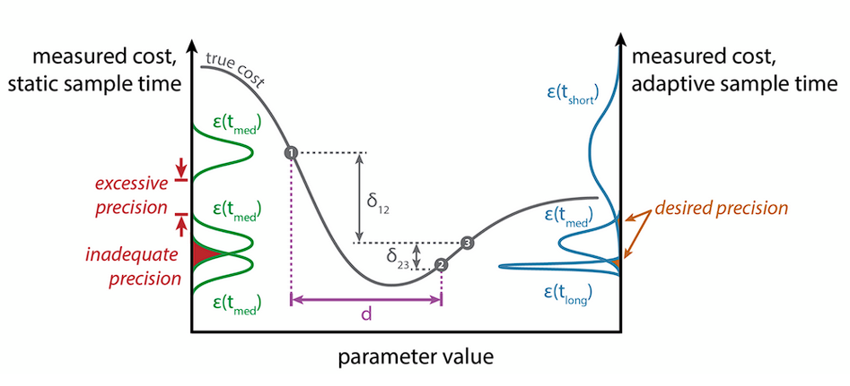
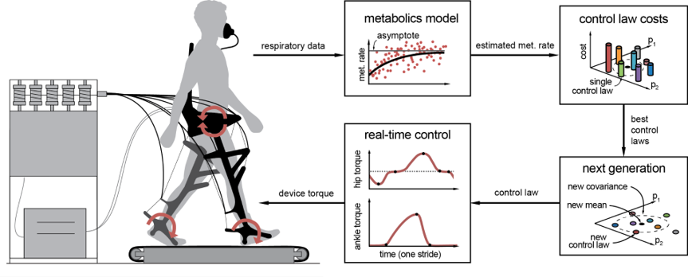
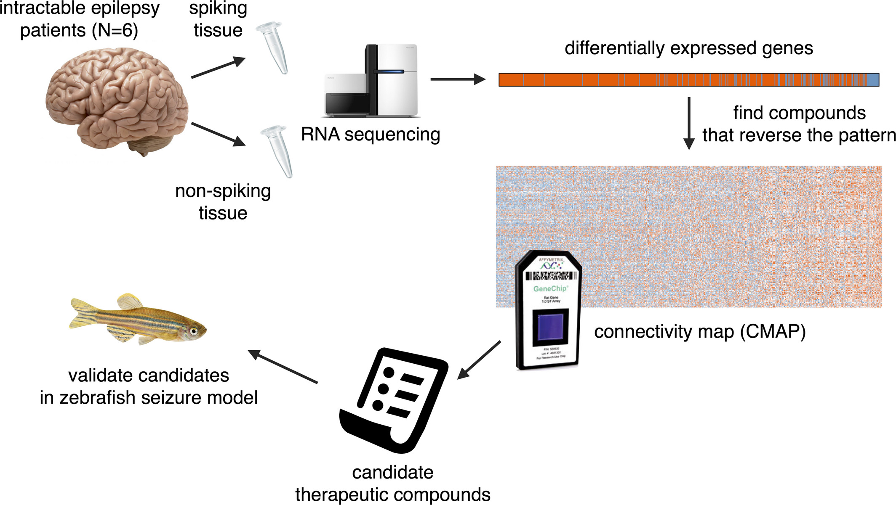
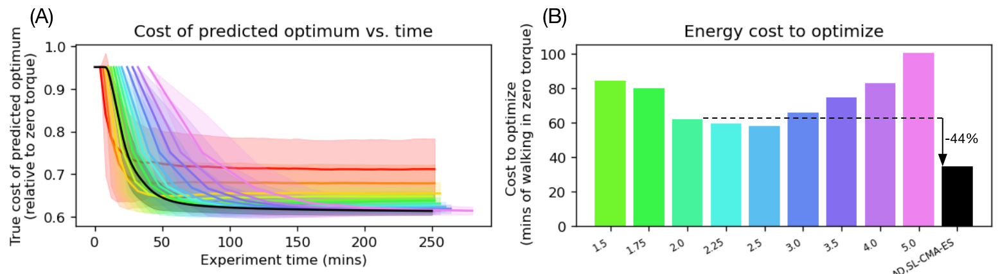
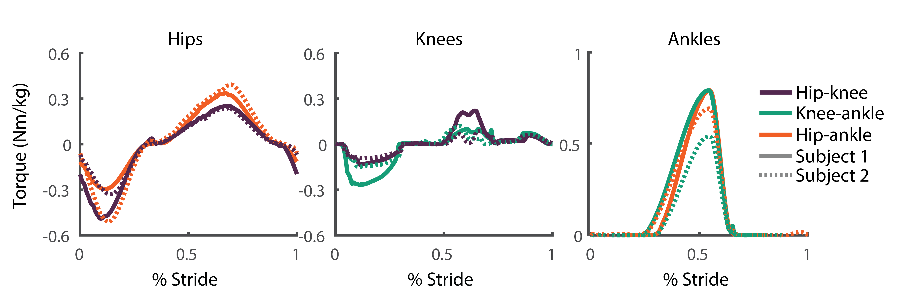
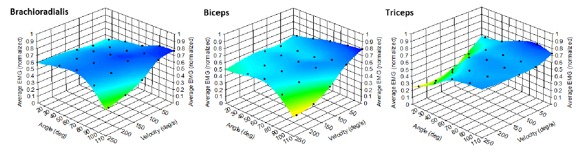
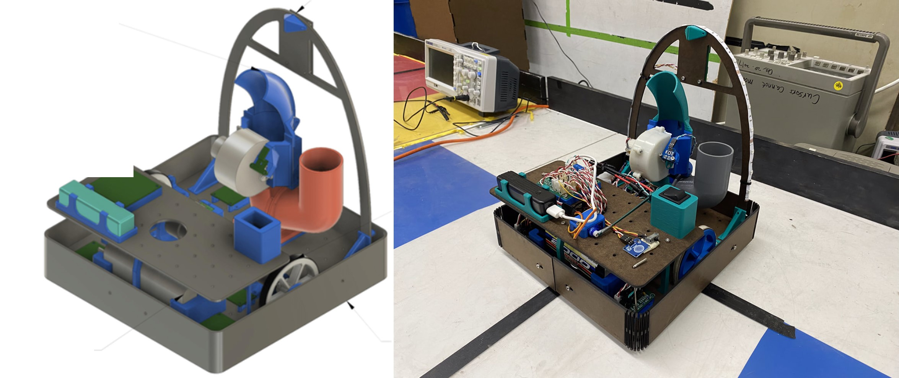
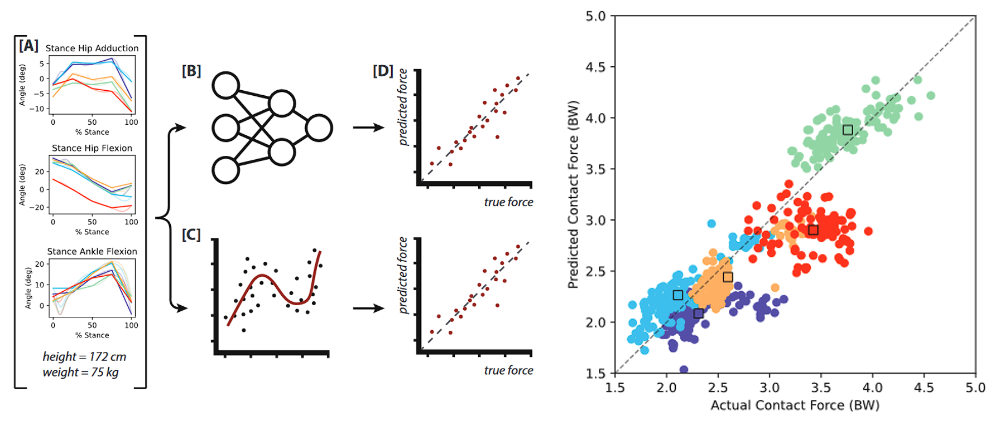
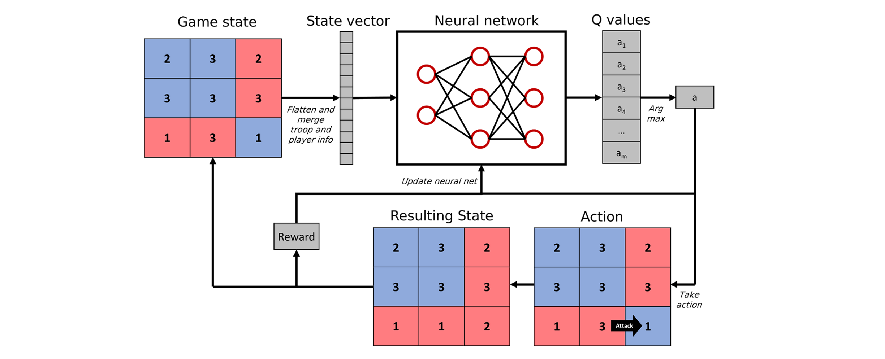

|
Russell Martin
4th Year PhD Student |
In my graduate work, I am specializing in controls, mechatronics, and optimization, and am applying these technical skills in the development of robotic exoskeletons that assist walking. My research has specifically focused on augmenting human-in-the-loop exoskeleton optimization and investigating exoskeleton control strategies for assisting people who have had a stroke. My goal is to leverage my skills while working at the frontier in mechanical engineering, particularly in the development of mechatronic or robotic systems that require operation in dynamic enviornments and/or human-machine interaction.
Journal papers
|  |
Expediting CMA-ES optimization in the presence of noise RM Martin, SH Collins In preparation |
|  |
Comparing optimized exoskeleton assistance of the hip, knee, and ankle in single and multi-joint configurations PW Franks, GM Bryan, RM Martin, R Reyes, AC Lakmazaheri, SH Collins Wearable Technologies, 2021 [paper] |
|  |
Drug repositioning in epilepsy reveals novel anti-seizure candidates L Brueggeman, ML Sturgeon, RM Martin, AJ Grossbach, Y Nagahama, A Zhang, MA Howard III, H Kawasaki, S Wu, RA Cornell, JJ Michaelson, AG Bassuk Annals of Clinical and Translational Neurology, 2019 [paper] |
Selected conference presentations and posters
|  |
Expediting human-in-the-loop optimization RM Martin, SH Collins Talk presented at: Dynamic Walking, 2023, Munich, Germany [video abstract] |
|  |
Identifying the best two-joint combination of hip, knee, and ankle exoskeleton assistance RM Martin, PW Franks, GM Bryan, AC Lakmazaheri, SH Collins Poster presented at: Dynamic Walking, 2021, Virtual [poster] |
|  |
The effect of joint angle and contraction velocity on measured muscle activation at the elbow and knee RM Martin, LA Frey Law Poster presented at: Biomedical Engineering Society, 2019, Philadelphia, PA [abstract] |
Other projects
|  |
Wheeled basketball-playing robot I was part of a team of 3 students that designed a robot that autonomously navigated a course and shot balls into a basket. In this competition, we finished 2nd of 10 teams. I used Onshape for CAD, I programmed a PIC32 using C, and I used KiCad for schematic design. [website] |
|  |
Predicting knee contact force using machine learning I was part of a team of 2 students that built a machine learning model using Scikit-Learn to predict the joint contact force in the knee during walking, an important indicator in the development of osteoarthritis. [poster] [paper] |
|  |
AI model for playing Risk I built a Deep-Q reinforcement learning model that played the game Risk using and TensorFlow. [video] [github] |

|
Mars Rover I was the president and mechanical team lead of the UI Robotics Club. We built a Mars rover and competed at the Canadian International Rover Competition. As president, I wrote grants to help win funding from university and national sources. |